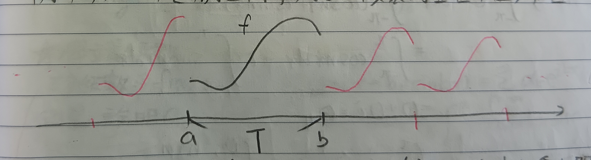
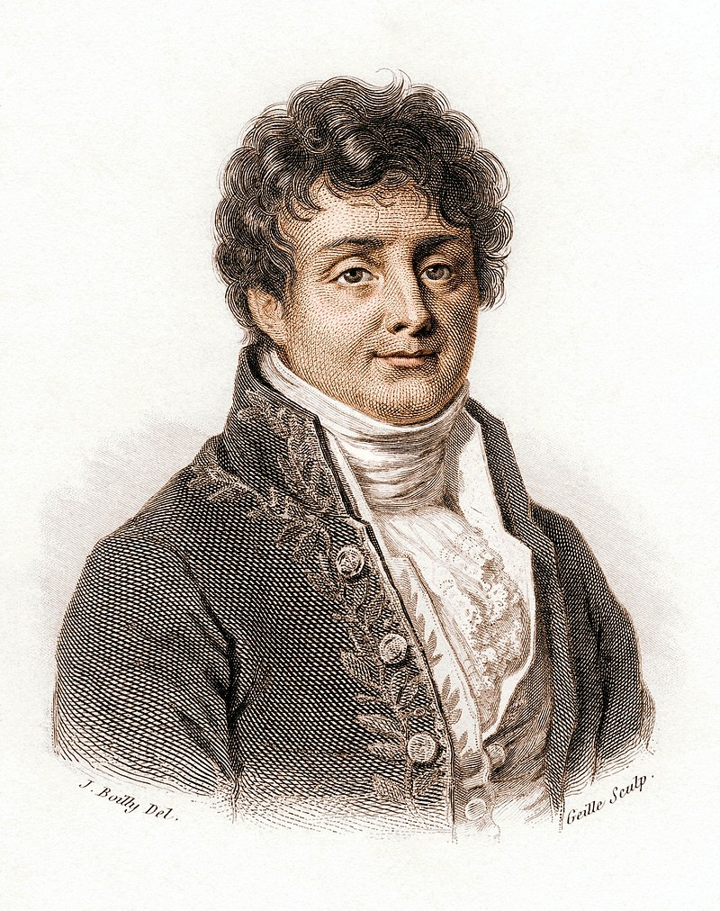

這份筆記是關於傅立葉級數的性質與收斂性。
週期函數
註記 1
我們這裡的目標是希望將函數表為 \[ f(x)=\frac{a_0}{2}+\sum_{k=1}^\infty(a_k\cos kx+b_k\sin kx) \]
定義 2：週期 (Period)
給定\(\mathbb{R}\)上的函數\(f\)，若對於所有\(x\)都有\(f(x+T)=f(x)\)，則稱\(T\)是\(f\)的週期。
註記 2-1
對於整數\(m\)，若\(T\)是週期，則顯然\(mT\)也是週期。
例 2-2
對於\(\omega>0\)，我們知道\(T=\frac{2\pi}{\omega}\)是\(\sin\omega x\)的週期。
註記 2-3
考慮週期為\(T\)的函數\(f\)，則對所有\(\alpha\in\mathbb{R}\)，有 \[ \int_{-\alpha}^{T-\alpha}f(x)dx=\int_0^T f(x)dx \]
註記 3
註記1中的式子要成立的話顯然\(f\)必須要有\(2\pi\)週期(因為\(\cos k(x+2\pi)=\cos kx\), etc.)。或者是說，對於任意的\(f\)，我們可以在小一點的區間上討論這個問題。例如，對於在\([a,b]\)上的\(f\)，我們可以把它複製到整個\(\mathbb{R}\)上，如下圖1。
顯然除了端點以外都有\(f(x+T)=f(x)\)，然而在端點上就會出問題。我們可以重新定義督點上的值。令\(\xi\)是一個端點，則令 \[ f(\xi)=\frac{1}{2}[f(\xi^+)+f(\xi^-)] \] 其中 \[ \begin{aligned} f(\xi^+)&=\lim_{\epsilon\to 0^+}f(\xi+\epsilon)\\ f(\xi^-)&=\lim_{\epsilon\to 0^+}f(\xi-\epsilon) \end{aligned} \] 直覺來說，就是把兩端點的函數值平均。然後把整個函數伸縮、平移，就能直接考慮\([a,b]=[0,2\pi]\)了。
定義 3-1：擴展 (Extension)
註記3中的行為稱為把\(f\)從\([a,b]\)擴展到\(\mathbb{R}\)上。
定義 4：頻率 (Frequency)
對於週期\(T\)，我們稱\(\frac{1}{T}\)為頻率。
例 4-1
對於\(\omega>0\)，我們知道\(\sin\omega x\)的頻率是 \[ \frac{1}{T}=\frac{\omega}{2\pi} \]
常用三角公式
定義 5：複指數函數 (Complex Exponential Function)
對於\(z\in\mathbb{C}\)，我們定義 \[ e^z=1+z+\frac{z^2}{2!}+\frac{z^3}{3!}+\cdots \] 即原本實數時指數函數的泰勒級數。
引理 6：歐拉公式 (Euler's Formula)
對於\(x\in\mathbb{R}\)，有 \[
e^{ix}=\cos x+i\sin x
\] 其中\(i=\sqrt{-1}\)。
證明：我們有 \[ \begin{aligned} e^{ix}&=1+(ix)+\frac{(ix)^2}{2!}\\ &=1+ix-\frac{x^2}{2!}-\frac{ix^3}{3!}+\frac{x^4}{4!}+\frac{ix^5}{5!}+\cdots\\ &=\left(1-\frac{x^2}{2!}+\frac{x^4}{4!}-\frac{x^6}{6!}+\cdots\right)+i\left(x-\frac{x^3}{3!}+\frac{x^5}{5!}-\cdots\right)\\ &=\cos x+i\sin x \end{aligned} \] QED
註記 6-1
從歐拉公式會有 \[ \begin{aligned} \cos x&=\frac{e^{ix}+e^{-ix}}{2}\\ \sin x&=\frac{e^{ix}-e^{-ix}}{2i} \end{aligned} \]
註記 6-2
回到三角級數，令 \[ S_n(x)=\frac{a_0}{2}+\sum_{k=1}^n(a_k\cos kx+b_k\sin kx) \] 使用註記5-1-1的結果，我們有 \[ \begin{aligned} \cos kx&=\frac{1}{2}\left(e^{ikx}+e^{-ikx}\right)\\ \sin kx&=\frac{1}{2i}\left(e^{ikx}-e^{-ikx}\right) \end{aligned} \] 於是有 \[ S_n(x)=\sum_{k=-n}^n\alpha_k e^{ikx} \] 其中 \[ \begin{aligned} \alpha_k&=\frac{1}{2}(a_k-ib_k), k=1,2,\cdots,n\\ \alpha_{-k}&=\frac{1}{2}(a_k+ib_k), k=1,2,\cdots,n\\ \alpha_0&=\frac{a_0}{2} \end{aligned} \]
定義 7：複積分 (Complex Integral)
對於函數\(r:\mathbb{R}\to\mathbb{C}\)，若可以寫成\(r(x)=p(x)+iq(x)\)，其中\(p,q\)是實函數，則定義 \[ \int r(x)dx\equiv\int p(x)dx+i\int q(x)dx \]
定理 8
對於所有\(n\in\mathbb{Z}\)，有 \[ \int_{-\pi}^\pi e^{inx}dx=\left\{ \begin{aligned} 2\pi&,n=0\\ 0&,n\neq 0 \end{aligned} \right. \]
證明：\(n=0\)時，\(e^{inx}=1\)，結論是顯然的。
\(n\neq 0\)時，我們有 \[
\begin{aligned}
\int_{-\pi}^\pi e^{inx}dx&=\int_{-\pi}^\pi (\cos nx+i\sin nx)dx\\
&=\int_{-\pi}^\pi \cos nxdx+i\int_{-\pi}^\pi \sin nxdx\\
&=0+0i=0
\end{aligned}
\] QED
推論 8-1
對於\(n,m\in\mathbb{Z}\)，有 \[ \int_{-\pi}^\pi e^{inx}e^{-imx}dx=\left\{ \begin{aligned} 0&,n\neq m\\ 2\pi&,n=m \end{aligned} \right. \]
定義 8-1-1：內積 (Inner Product)
我們將 \[ \int_{-\pi}^\pi e^{inx}e^{-imx}dx \] 稱為\(e^{inx}\)和\(e^{-imx}\)的內積，記做\(\langle e^{inx},e^{-imx}\rangle\)。
定義 8-1-2：正交 (Orthogonal)
若兩函數的內積為零，稱它們正交。如上述的\(e^{inx}\)和\(e^{-imx}\)就正交。
定理 9
令 \[\sigma_n(x)=\frac{1}{2}+\cos x+\cos 2x+\cdots+\cos nx\] 則 \[ \sigma_n(x)=\frac{\sin(n+\frac{1}{2})x}{2\sin\frac{1}{2}x} \]
證明：可以看出\(\sigma_n(x)\)是註記6-2中\(S_n(x)\)的特例(\(a_k=1, b_k=0, k=1,2,\cdots,n\))，故有 \[ \begin{aligned} \sigma_n(x)&=\frac{1}{2}\sum_{k=-n}^n e^{ikx}\\ &=\frac{1}{2}\left(e^{-inx}\cdot\frac{1-e^{i(2n+1)x}}{1-e^{ix}}\right)\\ &=\frac{1}{2}\left(\frac{e^{-inx}-e^{i(n+1)x}}{1-e^{ix}}\right)\\ &=\frac{1}{2}\left(\frac{e^{-inx}-e^{i(n+1)x}}{1-e^{ix}}\right)\cdot\frac{e^{-\frac{1}{2}ix}}{e^{-\frac{1}{2}ix}}\\ &=\frac{1}{2}\left(\frac{e^{-i\left(n+\frac{1}{2}\right)x}-e^{i\left(n+\frac{1}{2}\right)x}}{e^{-\frac{1}{2}ix}-e^{\frac{1}{2}ix}}\right)\\ &=\frac{1}{2}\times\frac{2i\times\sin\left(-\left(n+\frac{1}{2}\right)x\right)}{2i\times\sin\left(-\frac{1}{2}x\right)}\\ &=\frac{\sin\left(n+\frac{1}{2}\right)x}{2\sin\frac{1}{2}x} \end{aligned} \] QED
推論 9-1
對任何整數\(n\)，有 \[ \int_0^\pi\frac{\sin\left(n+\frac{1}{2}\right)x}{2\sin\frac{1}{2}x}dx=\frac{\pi}{2} \]
證明：套用定理9，則結論是顯然的，因為對所有\(n\in\mathbb{N}\)有\(\int_0^\pi\cos nxdx=0\)。QED
傅立葉級數
定義 10：片段連續 (Piecewise Continuous)
考慮定義在\([a,b]\)上的函數\(f\)，若\(f\)在\([a,b]\)上僅有有限多個跳躍型不連續點，則稱\(f\)片段連續。
底下討論的都是片段連續函數。
定理 11：傅立葉級數 (Fourier Series)
考慮三角級數 \[ f(x)=\frac{a_0}{2}+\sum_{k=1}^\infty(a_k\cos kx+b_k\sin kx)=\sum_{k=-\infty}^\infty\alpha_k e^{ikx} \] 我們希望說明當\(f\)滿足某些條件時，我們會有 \[ \begin{aligned} a_k&=\frac{1}{\pi}\int_{-\pi}^\pi f(x)\cos kxdx\\ b_k&=\frac{1}{\pi}\int_{-\pi}^\pi f(x)\sin kxdx \end{aligned} \] 或是用註記6-2的符號，是 \[ \alpha_k=\frac{1}{2\pi}\int_{-\pi}^\pi f(x)e^{-ikx} \]
引理 12
若\(f(x)\)定義在\([a,b]\)上且\(f'(x)\)連續，則當\(n\to\infty\)時， \[ \int_a^b f(x)\sin nxdx\to 0 \]
證明：用分部積分法，則有 \[ \begin{aligned} \int_a^b f(x)\sin nxdx&=\int_a^b f(x)\left(\frac{-\cos nx}{n}\right)'dx\\ &=\left.\frac{1}{n}(-\cos(nx)f(x))\right|^b_a+\frac{1}{n}\int_a^b\cos nxf'(x)dx \end{aligned} \] 很明顯的\(n\to\infty\)時積分趨近於\(0\)。QED
註記 12-1
所以到這裡至少知道定理11中的級數可以是(但不一定要是)收斂的。
引理 13：狄利克雷積分 (Dirichlet Series)
\[ \int_0^\infty\frac{\sin x}{x}dx=\frac{\pi}{2} \]
證明：令 \[ I_M=\int_0^M\frac{\sin x}{x}dx \] 我們希望說明\(\lim\limits_{M\to\infty}I_M=\frac{\pi}{2}\)。給定一個\(p>0\)，令\(M=\lambda p\)，則 \[ I_M=I_{\lambda_p}=\int_0^{\lambda p}\frac{\sin x}{x}dx=\int_0^p\frac{\sin\lambda y}{y}dy \] 其中\(x=\lambda y\)。令 \[ I=\lim_{\lambda\to\infty}\int_0^p\frac{\sin\lambda y}{y}dy \] 我們知道 \[ \begin{aligned} |I_N-I_M|&=\left|\int_N^M\frac{\sin x}{x}dx\right|\\ &\leq\left|\left.\frac{-\cos x}{x}\right|^N_M\right|+\left|\int_M^N\frac{\sin x}{x^2}\right|\\ &\leq\frac{c}{M} \end{aligned} \] 其中\(c\)是和\(M,N\)都無關的常數。所以\(I_M\)是柯西序列且 \[ \left|I-\int_0^p\frac{\sin\lambda y}{y}dy\right|\leq\frac{c}{\lambda p} \] 令 \[ K(x)=\frac{1}{x}-\frac{1}{2\sin\frac{x}{2}}, K(0)=0 \] 易知\(K\)和\(K'\)都連續，所以當\(\lambda\to\infty\)時有 \[ \int_0^p K(x)\sin\lambda xdx\to 0 \] (引理12)在這裡移項，有 \[ \lim_{\lambda\to\infty}\int_0^p\frac{\sin\lambda x}{2\sin\frac{x}{2}}dx=I \] 這與\(p\)的值無關。令\(p=\pi\), \(\lambda=n+\frac{1}{2}\)，由推論9-1有 \[ \int_0^\pi\frac{\sin\lambda x}{2\sin\frac{x}{2}}dx=\frac{\pi}{2} \] 故 \[ \int_0^\infty\frac{\sin x}{x}dx=\frac{\pi}{2} \] QED
推論 13-1
對所有\(p>0\)，有 \[ \lim_{\lambda\to 0}\int_0^p\frac{\sin\lambda x}{x}dx=\frac{\pi}{2} \]
例 14
考慮 \[
\chi(x)=\left\{
\begin{aligned}
\pi-x&,x>0\\
0&,x=0\\
-\pi-x&,x<0
\end{aligned}
\right.
\] 已知\(\forall
p>0\)，當\(\lambda\to\infty\)時有 \[
\int_0^p\frac{\sin\lambda y}{2\sin\frac{y}{2}}dy\to\frac{\pi}{2}
\] 固定\(p=x_0>0\), \(\lambda=n+\frac{1}{2}\)，則 \[
\lim_{n\to\infty}\int_0^{x_0}\frac{\sin\left(n+\frac{1}{2}\right)
y}{2\sin\frac{y}{2}}=\frac{\pi}{2}
\] 而由定理9，有 \[
\lim_{n\to\infty}\int_0^{x_0}\left(\frac{1}{2}+\cos y+\cos
2y+\cdots+\cos ny\right)dy=\frac{\pi}{2}
\] 於是 \[
\begin{aligned}
&\frac{x_0}{2}+\sin x_0+\frac{1}{2}\sin 2x_0+\cdots+\frac{1}{n}\sin
nx_0\to\frac{\pi}{2}\\
\Rightarrow&2\left(\sin x_0+\frac{1}{2}\sin
2x_0+\cdots+\frac{1}{n}\sin nx_0\right)\to\pi-x_0
\end{aligned}
\] 且由於\(\sin\)是奇函數，故\(x_0<0\)時， \[
2\left(\sin x_0+\frac{1}{2}\sin 2x_0+\cdots+\frac{1}{n}\sin
nx_0\right)\to -\pi-x_0
\] 故有 \[
\chi(x)=2\left(\sin x+\frac{1}{2}\sin 2x+\frac{1}{3}\sin
3x+\cdots\right)
\] 以上是\(\chi\)的傅立葉級數，可以代入定理11的\(a_k\), \(b_k\)，會發現和上式一樣。
令\(\phi(x)=\chi(\pi-x)\)，則 \[
\phi(x)=2\sum_{k=1}^\infty(-1)^{k+1}\frac{\sin kx}{k}
\] 代入\(x=\pi/2\)就有 \[
\frac{\pi}{4}=1-\frac{1}{3}+\frac{1}{5}-\frac{1}{7}+\cdots
\] 這又是萊布尼茲-格列高里公式，可見這裡的定理5-1。
定義 15
定義 15-1：傅立葉係數 (Fourier Coefficient)
定理11中的\(a_k\), \(b_k\)和\(\alpha_k\)統稱為傅立葉係數。
定義 15-2：傅立葉部分和 (Fourier Partial Sum)
我們稱 \[ \begin{aligned} S_n(x)&=\frac{a_0}{2}+\sum_{k=1}^n(a_k\cos kx+b_k\sin kx)\\ &=\sum_{k=-n}^n\alpha_ke^{ikx} \end{aligned} \] 為第\(n\)個傅立葉部分和。
定理 16
給定定義在\([-\pi,\pi]\)上的函數\(f\)，其中\(f'(x),
f''(x)\)都連續，則對所有\(x\)有\(S_n(x)\to
f(x)\)。(或者是說，\(S_n(x)\to\frac{1}{2}(f(x^-)+f(x^+))\)，見上註記3。)
證明：我們希望說明固定\(x\)時有 \[
\left|S_n(x)-\frac{1}{2}(f(x^-)+f(x^+))\right|\to 0
\] 把定理11中的\(a_k,
b_k\)代進來，用和角公式，我們有 \[
\begin{aligned}
S_n(x)&=\frac{1}{\pi}\int_{-\pi}^\pi
f(t)\left[\frac{1}{2}+\sum_{k=1}^n(\cos kt\cos kx+\sin kt\sin
kx)\right]dt\\
&=\frac{1}{\pi}\int_{-\pi}^\pi
f(t)\left(\frac{1}{2}+\sum_{k=1}^n\cos k(t-x)\right)\\
&=\frac{1}{2\pi}\int_{-\pi}^{\pi}f(t)\frac{\sin\left(n+\frac{1}{2}\right)(t-x)}{\sin\frac{1}{2}(t-x)}dt\mbox{
(定理9)}
\end{aligned}
\] 令\(\tau=t-x\)，則 \[
S_n(x)=\frac{1}{2\pi}\int_{-\pi}^\pi
f(x+\tau)\frac{\sin\left(n+\frac{1}{2}\right)\tau}{\sin\frac{1}{2}\tau}d\tau
\] (因為可以用註記3的方式假定\(f\)是週期函數，所以不用改變積分範圍)
為了簡便起見，底下令 \[
\bar{f}(x)=\frac{1}{2}(f(x^-)+f(x^+))
\] 則因為 \[
\left(\frac{1}{\pi}\int_0^\pi\frac{\sin\left(n+\frac{1}{2}\right)t}{\sin\frac{1}{2}t}dt\right)\cdot
f(x^+)=\frac{1}{\pi}\cdot\frac{\pi}{2}\cdot f(x^+)=\frac{1}{2}f(x^+)
\] 且因為\(\frac{\sin\left(n+\frac{1}{2}\right)t}{\sin\frac{1}{2}t}\)是偶函數，故也有
\[
\left(\frac{1}{\pi}\int_{-\pi}^0\frac{\sin\left(n+\frac{1}{2}\right)t}{\sin\frac{1}{2}t}dt\right)\cdot
f(x^-)=\frac{1}{2}f(x^-)
\] 於是 \[
S_n(x)-\bar{f}(x)=\frac{1}{\pi}\int_0^\pi\frac{f(x+t)-f(x^+)}{2\sin\frac{t}{2}}\sin\left(n+\frac{1}{2}\right)tdt+\frac{1}{\pi}\int_{-pi}^0
\frac{f(x+t)-f(x^-)}{2\sin\frac{t}{2}}\sin\left(n+\frac{1}{2}\right)tdt
\] 對於\(0<t<\pi\)，令
\[
\phi(t)=\frac{f(x+t)-f(x^+)}{2\sin\frac{t}{2}}
\] 我們希望說明\(\phi\)和\(\phi'\)都連續。具體來說，是要說明\(t=0\)的地方連續。我們有 \[
\phi(t)=\frac{f(x+t)-f(x^+)}{t}\times\frac{t}{2\sin\frac{t}{2}}
\] 當\(t\to 0\)時，我們有 \[
\frac{t}{2\sin\frac{t}{2}}\to 1
\] 故 \[
\phi(0^+)=f'(x^+), \phi(0^-)=f'(x^-)
\] 而由假設\(f'\)連續，\(f'(x^+)=f'(x^-)\)，故\(\phi\)連續。接著令\(\phi=gh\)，其中 \[
h=\frac{t}{2\sin\frac{t}{2}}
\] 則\(\phi'=g'h+gh'\)，由微分均值定理(這裡的定理4)我們知道存在\(\xi\)使得 \[
g(t)=\frac{f(x+t)-f(x^+)}{2\sin\frac{t}{2}}=f'(x+\xi)
\] 故 \[
g'(t)=\frac{tf'(x+t)+f(x^+)-f(x+t)}{t^2}
\] 令\(t\to 0\)，有 \[
\begin{aligned}
g'(t)&=\frac{f'(x+t)}{t}+\frac{1}{t}\times\frac{f(x^+)-f(x+t)}{t}\\
&=\frac{f'(x+t)}{t}-\frac{f'(x)}{t}\\
&=f''(x)
\end{aligned}
\] 由假設\(f''\)連續，故\(g'\)連續，故\(\phi'\)亦連續。由引理12，當\(n\to\infty\)時有 \[
\frac{1}{\pi}\int_0^\pi\frac{f(x+t)-f(x^+)}{2\sin\frac{t}{2}}\sin\left(n+\frac{1}{2}\right)tdt\to
0
\] 同理 \[
\frac{1}{\pi}\int_{-pi}^0
\frac{f(x+t)-f(x^-)}{2\sin\frac{t}{2}}\sin\left(n+\frac{1}{2}\right)tdt\to
0
\] 於是\(S_n(x)-\bar{f}(x)\to
0\)。QED
註記 16-1
之後會常常用到以下形式的傅立葉部分和： \[ S_n(x)=\frac{1}{2\pi}\int_{-\pi}^\pi f(x+\tau)\frac{\sin\left(n+\frac{1}{2}\right)\tau}{\sin\frac{1}{2}\tau}d\tau \]
註記 17
我們有以下小訣竅可以計算傅立葉係數：
1. 若\(f\)是偶函數，則對所有\(k\)，有\(b_k=0\)。
2. 若\(f\)是奇函數，則對所有\(k\)，有\(a_k=0\)。
證明：1. 我們有 \[ b_k=\frac{1}{\pi}\int_{-\pi}^\pi f(t)\sin ktdt \] 很容易就能得到\(b_k=0\)。第2.點同理。QED
例 18
在\(x\in[-\pi,\pi]\)上考慮\(f(x)=x^2\)。可知\(b_k=0\)，而 \[ a_k=\frac{1}{\pi}\int_{-\pi}^\pi x^2\cos kxdx=(-1)^k\frac{4}{k^2} \] 且\(a_0=\frac{2}{3}\pi^2\)，故 \[ x^2=\frac{\pi^2}{3}-4\left(\cos x-\frac{\cos 2x}{2^2}+\frac{\cos 3x}{3^2}-\cdots\right) \]
例 19
在\(x\in[-\pi,\pi]\)上考慮\(f(x)=|x|\)。可知\(b_k=0\)，而 \[ a_k=\left\{ \begin{aligned} 0&,k>0\mbox{ is even}\\ -\frac{4}{\pi n^2}&,k\mbox{ is odd} \end{aligned} \right. \] 且\(a_0=\pi\)，故有 \[ |x|=\frac{\pi}{2}-\frac{4}{\pi}\left(\cos x+\frac{\cos 3x}{3^2}+\frac{\cos 5x}{5^2}+\cdots\right) \] 代入\(x=0\)移項，就有 \[ \frac{\pi^2}{8}=1+\frac{1}{3^2}+\frac{1}{5^2}+\cdots \] (雖然這裡\(f'\)不連續，不過仔細看會發現證明定理16中所使用到的引理12其實只要\(f'\)片段連續就好。)
例 20
考慮函數\(f(x)=\cos\mu x\)，其中\(\mu\in\mathbb{R}\)。可知\(b_k=0\)，而 \[ \begin{aligned} a_k&=\frac{1}{\pi}\int_{-\pi}^\pi\cos\mu x\cos kxdx\\ &=\frac{1}{\pi}\int_{-\pi}^{\pi}\frac{1}{2}(\cos(\mu+k)x+\cos(\mu-k)x)dx\\ &=\frac{2}{\pi}\frac{(-1)^k\mu}{\mu^2-k^2}\sin\mu\pi \end{aligned} \] 於是有 \[ \cos\mu x=\frac{2}{\pi}\mu\sin\mu\pi\left[\frac{1}{2\mu^2}-\frac{\cos x}{\mu^2-1^2}+\frac{\cos 2x}{\mu^2-2^2}-\cdots\right] \] 令\(x=\pi\)，把\(\mu\)用\(x\)取代，把\(\sin\mu\pi\)除過去，有 \[ \begin{aligned} &\cot\pi x=\frac{2x}{\pi}\left(\frac{1}{2x^2}+\frac{1}{x^2-1^2}+\frac{1}{x^2-2^2}+\cdots\right)\\ \Rightarrow&\cot\pi x-\frac{1}{\pi x}=-\frac{2x}{\pi}\left(\frac{1}{2x^2}+\frac{1}{1^2-x^2}+\frac{1}{2^2-x^2}+\cdots\right) \end{aligned} \]
註記 20-1
\[
\cot\pi x-\frac{1}{\pi
x}=-\frac{2x}{\pi}\left(\frac{1}{2x^2}+\frac{1}{1^2-x^2}+\frac{1}{2^2-x^2}+\cdots\right)
\] 的右式在\(0\leq x\leq
q<1\)上一致收斂。
證明：每一項都有 \[ \frac{1}{n^2-x^2}\leq\frac{1}{n^2-q^2}<\frac{1}{n^2} \] 由\(\sum\frac{1}{n^2}\)一致收斂知上式也一致收斂。QED
而在這裡，我們可以把左右兩式同乘\(\pi\)再積分。左式積分有 \[ \pi\int_0^x\left(\cot\pi t-\frac{1}{\pi t}\right)=\log\frac{\sin\pi x}{\pi x} \] 而右式逐項積分有 \[ \begin{aligned} \log\left(1-\frac{x^2}{1^2}\right)+\log\left(1-\frac{x^2}{2^2}\right)+\cdots&=\lim_{n\to\infty}\sum_{k=1}^n\log\left(1-\frac{x^2}{k^2}\right)\\ &=\lim_{n\to\infty}\log\prod_{k=1}^n\left(1-\frac{x^2}{k^2}\right) \end{aligned} \] 因為級數一致收斂所以可以逐項積分(這裡的定理8)比較左右式的項，我們有： \[ \sin\pi x=\pi x\left(1-\frac{x^2}{1^2}\right)\left(1-\frac{x^2}{2^2}\right)\left(1-\frac{x^2}{3^2}\right)\cdots \]
定理 21：貝塞爾不等式 (Bessel's Inequality)
使用前面傅立葉係數與部分和的符號，我們有 \[ \frac{a_0^2}{2}+\sum_{k=1}^\infty(a_k^2+b_k^2)\leq\frac{1}{\pi}\int_{-\pi}^\pi(f(x))^2dx \]
證明：對於所有\(n\)，我們知道以下積分非負： \[ \frac{1}{\pi}\int_{-\pi}^\pi\left[f(x)-\frac{a_0}{2}-\sum_{k=1}^n(a_k\cos kx+b_k\sin kx)\right]^2dx \] 這個就是 \[ \begin{aligned} 0&\leq\frac{1}{\pi}\int_{-\pi}^\pi(f(x)-S_n(x))^2dx\\ &=\frac{1}{\pi}\int_{-\pi}^\pi(f^2(x)-2f(x)S_n(x)+S^2_n(x))dx \end{aligned} \] 於是 \[ \frac{1}{\pi}\int_{-\pi}^\pi f^2(x)dx\geq \frac{2}{\pi}\int_{-\pi}^\pi f(x)S_n(x)dx-\frac{1}{\pi}\int_{-\pi}^\pi S^2_n(x)dx\mbox{ (☆)} \] 令\(s_k=a_k\cos kx+b_k\sin kx\)，有 \[ \begin{aligned} &f(x)s_k(x)=a_kf(x)\cos kx+b_kf(x)\sin kx\\ \Rightarrow&\frac{2}{\pi}\int_{-\pi}^\pi f(x)s_k(x)=2a^2_k+2b^2_k \end{aligned} \] 於是 \[ \frac{2}{\pi}\int_{-\pi}^\pi f(x)S_n(x)dx=a^2_0+\sum_{k=1}^n(a^2_k+b^2_k) \] 而我們可以知道對於\(m\neq n\)有 \[ \int_{-\pi}^\pi\cos mx\cos nxdx=\int_{-\pi}^\pi\cos mx\sin nxdx=\int_{-\pi}^\pi\sin mx\sin nxdx=0 \] (過程詳略)我們可以從此知道 \[ \frac{1}{\pi}\int_{-\pi}^\pi S^2_n(x)dx=\frac{a^2_0}{2}+\sum_{k=1}^n(a^2_k+b^2_k) \] 於是全部塞回(☆)，就有 \[ \frac{a_0^2}{2}+\sum_{k=1}^\infty(a_k^2+b_k^2)\leq\frac{1}{\pi}\int_{-\pi}^\pi(f(x))^2dx \] QED

定理 22
若\(f\)和\(f'\)都連續，則 \[ f(x)=\frac{a_0}{2}+\sum_{k=1}^\infty(a_k\cos kx+b_k\sin kx) \]
證明：令\(g=f'\)，我們知道\(g\)連續。令\(c_n=nb_n\), \(d_n=-na_n\)，則由分部積分法易得 \[ \begin{aligned} c_n&=\frac{1}{\pi}\int_{-\pi}^\pi g(x)\cos nxdx\\ d_n&=\frac{1}{\pi}\int_{-\pi}^\pi g(x)\sin nxdx \end{aligned} \] 由貝塞爾不等式，有 \[ \sum_{k=1}^n(c^2_k+d^2_k)\leq\frac{1}{\pi}\int_{-\pi}^\pi g^2(x)dx=M<\infty \] 故有 \[ \sum_{k=1}^\infty n^2(a^2_k+b^2_k)<\infty \] 我們希望說明 \[ \frac{a_0}{2}+\sum_{k=1}^\infty(a_k\cos kx+b_k\sin kx) \] 一致收斂。由柯西不等式，有 \[ |a_k\cos kx+b_k\sin kx|^2\leq(a^2_k+b^2_k) \] 即 \[ \begin{aligned} |a_k\cos kx+b_k\sin kx|&\leq\sqrt{a^2_k+b^2_k}\\ &=\frac{1}{k}\times k\sqrt{a^2_k+b^2_k}\\ &\leq\frac{1}{2}\left[\frac{1}{k^2}+k^2(a^2_k+b^2_k)\right] \end{aligned} \] 最後一步是算幾不等式。我們知道\(\sum\frac{1}{k^2}\)收斂，且由前述也知\(\sum k^2(a^2_k+b^2_k)\)收斂。於是知 \[ \frac{a_0}{2}+\sum_{k=1}^\infty(a_k\cos kx+b_k\sin kx) \] 一致收斂(★)。令 \[ F(x)=\int_{-\pi}^x\left(f(t)-\frac{a_0}{2}\right)dt \] 則\(F(\pi)=F(-\pi)=0\)且\(F,F',F''\)都連續。則由定理16知\(F\)可以表達成其傅立葉級數，有 \[ F(x)=\frac{A_0}{2}+\sum_{k=1}^\infty(A_k\cos kx+B_k\sin kx) \] 且\(A_k=-\frac{1}{k}b_k\), \(B_k=\frac{1}{k}a_k\)，即 \[ F(x)=\frac{A_0}{2}+\sum_{k=1}^\infty\left(-\frac{b_k}{k}\cos kx+\frac{a_k}{k}\sin kx\right) \] 兩邊微分(因為(★)所以可以這麼做)，有 \[ f(x)-\frac{a_0}{2}=\sum_{k=1}^\infty(a_k\cos kx+b_k\sin kx) \] QED
註記 22-1
若\(f\)定義在\([-\pi,\pi]\)上且\(f,f'\)都連續，則 \[ \frac{a_0}{2}+\sum_{k=1}^n(a_k\cos kx+b_k\sin kx) \] 一致收斂到\(f(x)\)(上面的(★))。
傅立葉級數的平均收斂性
註記 23
可以找到連續函數\(f(x)\)使得它的傅立葉級數\(S_n(x)\)不會收斂到\(f(x)\)(具體的例子可以看[這裡])。
定理 24：斐葉定理 (Fejér's Theorem)
若\(f\)連續，則其傅立葉級數\(S_n(x)\)平均收斂到\(f\)。
定義 24-1：平均收斂 (Average Convergence)
若 \[
\alpha_n=\frac{1}{n+1}(S_0+S_1+\cdots+S_n)
\] 收斂，則稱\(S_n\)平均收斂。
證明：我們有 \[
S_n(x)=\frac{a_0}{2}+\sum_{k=1}^n(a_k\cos kx+b_k\sin kx)
\] 令 \[
\begin{aligned}
\sigma_n(x)&=\frac{1}{2}+\cos x+\cos 2x+\cdots+\cos nx\\
&=\frac{\sin\left(n+\frac{1}{2}\right)x}{2\sin\frac{x}{2}}\\
&=\frac{\sin\left(n+\frac{1}{2}\right)x\sin\frac{x}{2}}{2\sin^2\frac{x}{2}}\\
&=\frac{1}{2}\cdot\frac{\cos nx-\cos(n+1)x}{1-\cos x}
\end{aligned}
\] 則 \[
\begin{aligned}
\frac{1}{n+1}(\sigma_0+\sigma_1+\cdots+\sigma_n)&=\frac{1}{2(n+1)}\left(\frac{1-\cos(n+1)x}{1-\cos
x}\right)\\
&=\frac{1}{2(n+1)}\left(\frac{\sin\left(n+\frac{1}{2}\right)x}{\sin\frac{x}{2}}\right)^2
\end{aligned}
\] 令 \[
F_n(x)=\frac{1}{2(n+1)}\left(\frac{\sin\left(n+\frac{1}{2}\right)x}{\sin\frac{x}{2}}\right)^2
\] 易知：
1. \(F_n(x)\geq
0\)
2. \[\frac{1}{\pi}\int_{-\pi}^\pi F_n(x)dx=1\]
這可以用\(F_n=\frac{1}{n+1}(\sigma_0+\sigma_1+\cdots+\sigma_n)\)去想。
3. \[
\frac{1}{n+1}(S_0+S_1+\cdots+S_n)=\frac{1}{\pi}f(x-t)F_n(t)dt
\] 其中\(x\)是固定的。這可以用\(F_n=\frac{1}{n+1}(\sigma_0+\sigma_1+\cdots+\sigma_n)\)去想。
我們希望說明當\(n\)很大時有 \[
\left|\frac{1}{\pi}\int_{-\pi}^\pi
f(x-t)F_n(t)dt-f(x)\right|<\epsilon
\] 因為\(f(x)\)是常數，故我們有
\[
\begin{aligned}
\left|\frac{1}{\pi}\int_{-\pi}^\pi
f(x-t)F_n(t)dt-f(x)\right|&=\left|\frac{1}{\pi}\int_{-\pi}^\pi(f(x-t)-f(x))F_n(t)dt\right|\\
&=\left|\frac{1}{\pi}\int_{-\delta}^\delta(f(x-t)-f(x))F_n(t)dt+\frac{1}{\pi}\int_{outside\;(-\delta,\delta)}(f(x-t)-f(x))F_n(t)dt\right|
\end{aligned}
\] 因為\(f\)連續，故\(f\)在區間中一致連續 i.e. 給定\(\epsilon>0\), \(\exists\delta>0\) s.t. 當\(|t|<\delta\)時有\(|f(x-t)-f(x)|<\epsilon\)。我們底下分兩項來討論上式的大小。
1. 在\((-\delta,\delta)\)中的部分：我們有 \[
\begin{aligned}
\left|\frac{1}{\pi}\int_{-\delta}^\delta(f(x-t)-f(x))F_n(t)dt\right|&\leq\frac{1}{\pi}\int_{-\delta}^\delta|f(x-t)-f(x)||F_n(t)|dt\\
&\leq\frac{\epsilon}{\pi}\int_{-\delta}^\delta|F_n(t)|dt<\epsilon
\end{aligned}
\] 最後一步是上面易知的第2.點。
2. 在\((-\delta,\delta)\)外的部分：我們可以把它寫成
\[
\frac{1}{\pi}\int_{-\pi}^{-\delta}(f(x-t)-f(x))F_n(t)dt+\frac{1}{\pi}\int_\delta^\pi(f(x-t)-f(x))F_n(t)dt
\] 而又 \[
F_n(x)=\frac{1}{2(n+1)}\left(\frac{\sin\left(n+\frac{1}{2}\right)x}{\sin\frac{x}{2}}\right)^2\leq\frac{1}{2(n+1)(\delta/2)^2}
\] 因為\(x\to 0\)時\(\sin \frac{x}{2}\to\frac{x}{2}\)且\(\sin\left(n+\frac{1}{2}\right)x\leq
1\)。令\(M\)是\(|f|\)在\([-\pi,\pi]\)上的極大值，則 \[
\begin{aligned}
\left|\frac{1}{\pi}\int_{outside\;(-\delta,\delta)}(f(x-t)-f(x))F_n(t)dt\right|&\leq\frac{2M}{\pi}\int_\delta^\pi
F_n(t)dt\\
&\leq\frac{2M}{\pi}\times\pi\times\frac{1}{2(n+1)(\delta/2)^2}
\end{aligned}
\] 可以發現這可以任意小。當\(n\)很大時確實有 \[
\left|\frac{1}{\pi}\int_{-\pi}^\pi
f(x-t)F_n(t)dt-f(x)\right|<\epsilon
\] 而 \[
S_n(x)=\frac{1}{\pi}\int_{-\pi}^\pi f(x)\sigma(x-t)dt
\] 所以\(S_n\)平均收斂到\(f\)。QED
傅立葉級數的積分性質
定理 25
若\(f\)連續，則對所有\(x_1,x_2\)，有 \[ \int_{x_1}^{x_2}f(t)dt=\int_{x_1}^{x_2}\frac{a_0}{2}dt+\sum_{k=1}^\infty\left(\int_{x_1}^{x_2}a_k\cos ktdt+\int_{x_1}^{x_2}b_k\sin kxdt\right) \]
證明：令\(F(t)=\int_{-\pi}^x\left(f(t)-\frac{a_0}{2}\right)dt\)，則：
1. \(F(\pi)=F(-\pi)=0\)。
2.
\(F,F'\)都連續。
於是\(F\)可以表達成其傅立葉級數，即 \[
\frac{A_0}{2}+\sum_{k=1}^n A_k\cos kx+B_k\sin kx
\] 一致收斂到\(F(x)\)，且易有\(A_n=-\frac{b_n}{n}, B_n=\frac{a_n}{n}\)。故
\[
\begin{aligned}
\int_{x_1}^{x_2}\left(f(t)-\frac{a_0}{2}\right)dt&=F(x_2)-F(x_1)\\
&=\sum_{n=1}^\infty A_n(\cos nx_2-\cos nx_1)+B_n(\sin nx_2-\sin
x_1)\\
&=\sum_{n=1}^\infty\left[-\frac{b_n}{n}(\cos nx_2-\cos
nx_1)+\frac{a_n}{n}(\sin nx_2-\sin nx_1)\right]\\
&=\sum_{n=1}^\infty\left(\int_{x_1}^{x_2}a_n\cos
nxdx+\int_{x_1}^{x_2}b_n\sin nxdx\right)
\end{aligned}
\] QED
收斂速度的估計
定理 26
若\(f,f',f''\)都連續，則\(|S_n(x)-f(x)|=O\left(\frac{1}{n}\right)\)。
證明：把\(S_n\)寫成 \[
S_n(x)=\frac{1}{\pi}\int_{-\pi}^\pi f(x-y)D_n(y)dy
\] 其中 \[
D_n(y)=\frac{\sin\left(n+\frac{1}{2}\right)y}{2\sin\frac{y}{2}}
\] 故 \[
\begin{aligned}
S_n(x)-f(x)&=\frac{1}{\pi}\int_{-\pi}^\pi(f(x-y)-f(x))\frac{\sin\left(n+\frac{1}{2}\right)y}{2\sin\frac{y}{2}}dy\\
&=\frac{1}{2\pi}\int_{-\pi}^\pi\left(\frac{f(x-y)-f(x)}{\sin\frac{y}{2}}\right)\sin\left(n+\frac{1}{2}\right)ydy\\
&=\int_{-\pi}^\pi g(y)\sin\left(n+\frac{1}{2}\right)ydy
\end{aligned}
\] 其中 \[
g(y)=\frac{1}{2\pi}\times\frac{f(x-y)-f(x)}{\sin\frac{y}{2}}
\] 我們希望說明\(g'(y)\)連續。只有\(y=0\)的地方會有問題，我們兩部分處理：
1. \(\lim\limits_{y\to
0}g(y)\)存在：有 \[
\begin{aligned}
\lim_{y\to 0}g(y)&=\lim_{y\to
0}\frac{f(x-y)-f(x)}{\sin\frac{y}{2}}\times\frac{-y}{-y}\\
&=\lim_{y\to
0}\left(\frac{f(x-y)-f(x)}{-y}\right)\times\left(\frac{-y}{\sin\frac{y}{2}}\right)\\
&=f'(x)\times\lim_{y\to
0}\left(\frac{-y}{\sin\frac{y}{2}}\right)
\end{aligned}
\] 於是知 \(\lim\limits_{y\to
0}g(y)\)存在。
2. \(\lim\limits_{y\to 0}g'(y)\)存在：我們有
\[
g'(y)=\frac{-f'(x-y)\sin\frac{y}{2}-(f(x-y)-f(x))\frac{1}{2}\cos\frac{y}{2}}{\left(\sin\frac{y}{2}\right)^2}
\] 而由泰勒展開有 \[
f(x-y)=f(x)+f'(x)(-y)+\frac{1}{2}f''(x)y^2+o(y^2)
\] 最後的\(o(y^2)\)(當\(y\to 0\)時)可以忽略。則 \[
\begin{aligned}
g'(y)&=\frac{-f'(x-y)\sin\frac{y}{2}-\frac{1}{2}\left(f'(x)(-y)+\frac{1}{2}f''(x)y^2\right)\cos\frac{y}{2}}{\left(\sin\frac{y}{2}\right)^2}\\
&=\frac{\sin\frac{y}{2}(f'(x)-f'(x-y))-f'(x)\sin\frac{y}{2}+\frac{1}{2}f'(x)y\cos\frac{y}{2}-\frac{1}{4}f''(x)y^2\cos\frac{y}{2}}{\left(\sin\frac{y}{2}\right)^2}\\
&=\frac{f'(x)-f'(x-y)}{\sin\frac{y}{2}}-\frac{1}{4}\left(\frac{y}{\sin\frac{y}{2}}\right)^2(f''(x)\cos\frac{y}{2})-\frac{f'(x)\sin\frac{y}{2}-\frac{1}{2}f'(x)y\cos\frac{y}{2}}{\left(\sin\frac{y}{2}\right)^2}
\end{aligned}
\] 第一項\(y\to
0\)的極限由第1.點知存在；第二項的\(y\to
0\)的極限顯然存在，第三項的極限由羅必達法則知存在(這裡的定理3)。於是，\(\lim\limits_{y\to 0}g'(y)\)存在，\(g\)和\(g'\)都連續。
回到原本的定理，我們有
\[
\begin{aligned}
S_n(x)-f(x)&=\int_{-\pi}^\pi g(y)\sin\left(n+\frac{1}{2}\right)ydy\\
&=\int_{-\pi}^\pi
g(y)\left(-\frac{\cos\left(n+\frac{1}{2}\right)y}{n+\frac{1}{2}}\right)'dy\\
&=\left.\left(-g(y)\times\frac{\cos\left(n+\frac{1}{2}\right)y}{n+\frac{1}{2}}\right)\right|^\pi_{-\pi}+\int_{-\pi}^\pi
g'(y)\times\frac{\cos\left(n+\frac{1}{2}\right)y}{n+\frac{1}{2}}dy
\end{aligned}
\] 令\(|g'(y)|\)在\([-\pi,\pi]\)間的最大值為\(M\)，則 \[
\int_{-\pi}^\pi
g'(y)\times\frac{\cos\left(n+\frac{1}{2}\right)y}{n+\frac{1}{2}}dy\leq\int_{-\pi}^\pi\frac{M}{n+\frac{1}{2}}dy=O\left(\frac{1}{n}\right)
\] 又 \[
\left.\left(-g(y)\times\frac{\cos\left(n+\frac{1}{2}\right)y}{n+\frac{1}{2}}\right)\right|^\pi_{-\pi}=0
\] 故\(|S_n(x)-f(x)|=O\left(\frac{1}{n}\right)\)。QED
定理 27
若\(f,f'\)都連續，則\(|S_n(x)-f(x)|=O\left(\frac{1}{\sqrt{n}}\right)\)。
證明：沿用上一個定理的符號，我們有
\[
\begin{aligned}
S_n(x)-f(x)&=\int_{-\pi}^\pi g(y)\sin\left(n+\frac{1}{2}\right)ydy\\
&=\int_{-\delta}^\delta
g(y)\sin\left(n+\frac{1}{2}\right)ydy+\int_{outside\;[-\delta,\delta]}g(y)\sin\left(n+\frac{1}{2}\right)ydy
\end{aligned}
\] 我們可以分別估計兩個部分：
1. 估計\(\int_{-\delta}^\delta
g(y)\sin\left(n+\frac{1}{2}\right)ydy\)：無能為力，頂多 \[
\left|\int_{-\delta}^\delta
g(y)\sin\left(n+\frac{1}{2}\right)ydy\right|=O(\delta)
\] (至少\(g(y)\sin\left(n+\frac{1}{2}\right)y\)在\([-\pi,\pi]\)上有界)。
2. 估計\(\int_\delta^\pi
g(y)\sin\left(n+\frac{1}{2}\right)ydy\)：我們有 \[
\begin{aligned}
\int_\delta^\pi
g(y)\sin\left(n+\frac{1}{2}\right)ydy&=\int_\delta^\pi
g(y)\left(-\frac{\cos\left(n+\frac{1}{2}\right)y}{n+\frac{1}{2}}\right)'dy\\
&=g(\delta)\frac{\cos\left(n+\frac{1}{2}\right)\delta}{n+\frac{1}{2}}+\int_\delta^\pi
g'(y)\frac{\cos\left(n+\frac{1}{2}\right)y}{n+\frac{1}{2}}dy
\end{aligned}
\] 則 \[
\begin{aligned}
\left|\int_\delta^\pi
g(y)\sin\left(n+\frac{1}{2}\right)ydy\right|&\leq\left|g(\delta)\frac{\cos\left(n+\frac{1}{2}\right)\delta}{n+\frac{1}{2}}\right|+\left|\int_\delta^\pi
g'(y)\frac{\cos\left(n+\frac{1}{2}\right)y}{n+\frac{1}{2}}dy\right|\\
&\leq\underbrace{|g(\delta)|\times\frac{1}{n+\frac{1}{2}}}_{O\left(\frac{1}{n+\frac{1}{2}}\right)}+\left|\int_\delta^\pi
g'(y)\frac{\cos\left(n+\frac{1}{2}\right)y}{n+\frac{1}{2}}dy\right|
\end{aligned}
\] 而 \[
\begin{aligned}
&g'(y)=\frac{-f'(x-y)}{\sin\frac{y}{2}}-\frac{\cos\frac{y}{2}}{2\sin\frac{y}{2}}g(y)\\
\Rightarrow&|g'(y)|\leq\frac{c_1}{\delta}+\frac{c_2}{\delta}=O\left(\frac{1}{\delta}\right)
\end{aligned}
\] (不等式成立在\([\delta,\pi]\)上)接著我們就能估計\(|S_n-f|\)，有 \[
|S_n-f|=\left|\int_{-\pi}^\pi
g(y)\sin\left(n+\frac{1}{2}\right)y\right|=O\left(\delta+\frac{1}{n+\frac{1}{2}}+\frac{1}{n+\frac{1}{2}}\times\frac{1}{\delta}\right)
\] 令\(\delta=\frac{1}{\sqrt{n+\frac{1}{2}}}\)，則
\[
O\left(\delta+\frac{1}{n+\frac{1}{2}}+\frac{1}{n+\frac{1}{2}}\times\frac{1}{\delta}\right)=O\left(\frac{1}{\sqrt{n+\frac{1}{2}}}+\frac{1}{n+\frac{1}{2}}+\frac{1}{\sqrt{n+\frac{1}{2}}}\right)=O\left(\frac{1}{\sqrt{n}}\right)
\] QED